Возвращаем кузову
глубинублескцветзащиту
Моем вручную, полируем, наносим керамику и клеим плёнку. Один мастер ведёт машину от приёмки до выдачи, а работу вы принимаете под светом ламп.
Уход за кузовом и салоном
Цены указаны для седана. Кроссовер считаем с коэффициентом 1,2, внедорожник и минивэн с 1,4. Точную сумму покажет калькулятор.
Работа мастеров до и после
Проведите курсором по любой работе, чтобы увидеть, какой машина приехала. На телефоне коснитесь фото.
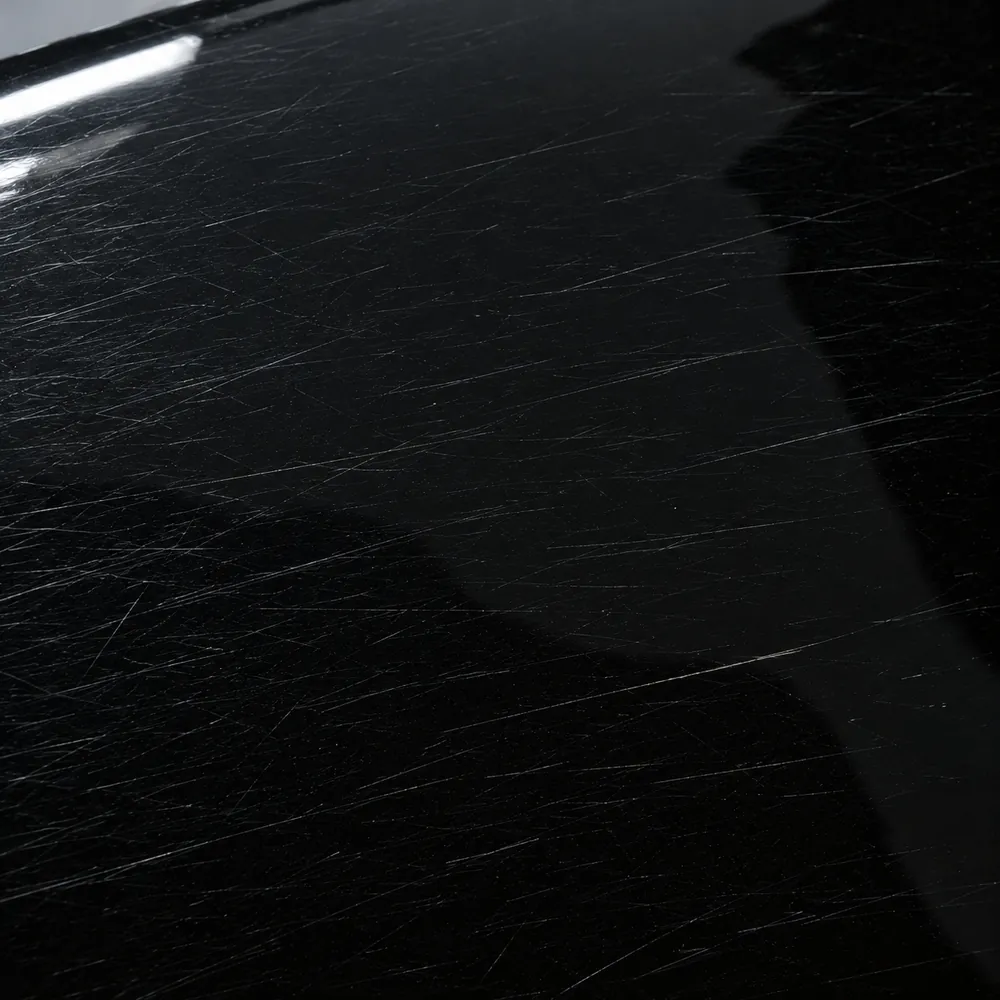
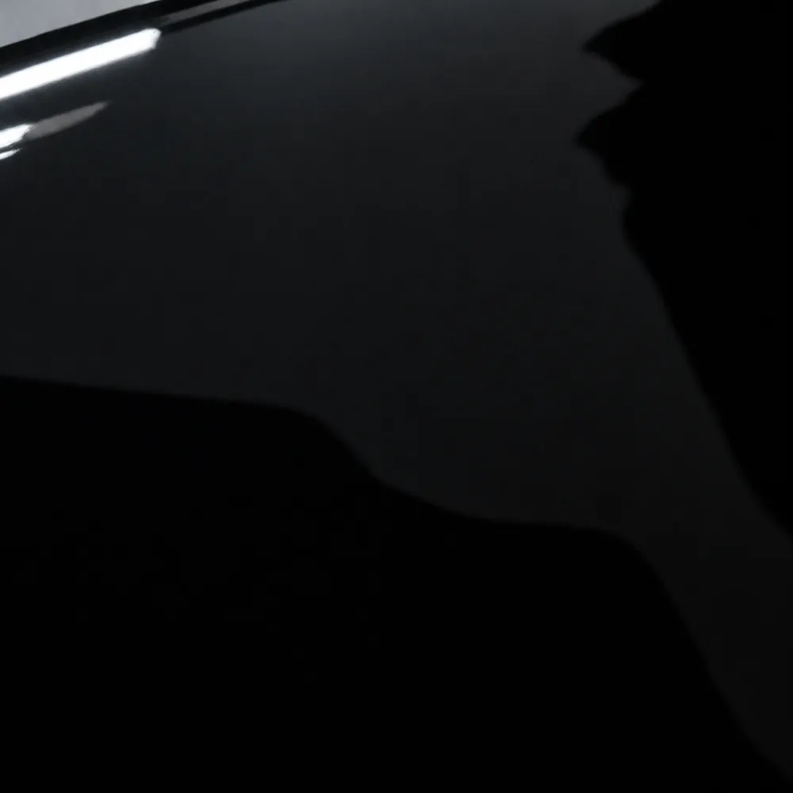
ДоПосле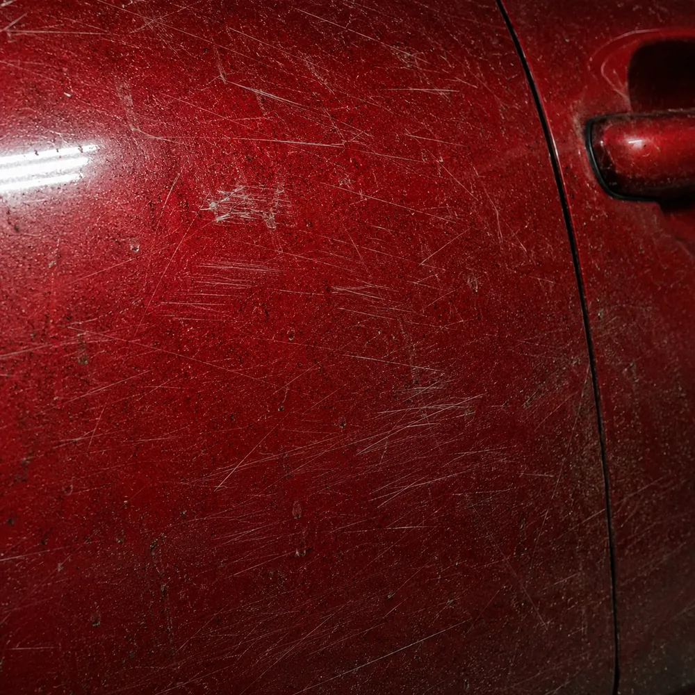
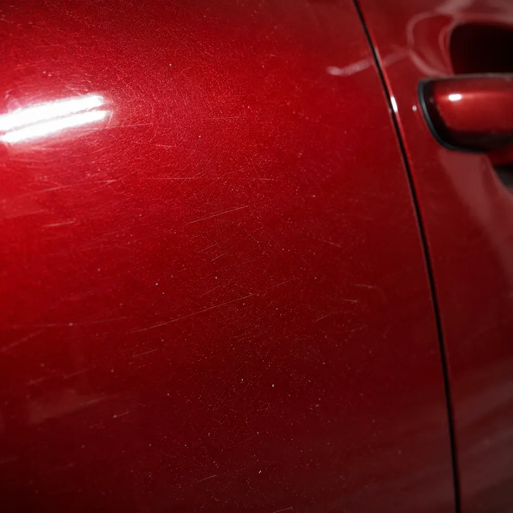
ДоПосле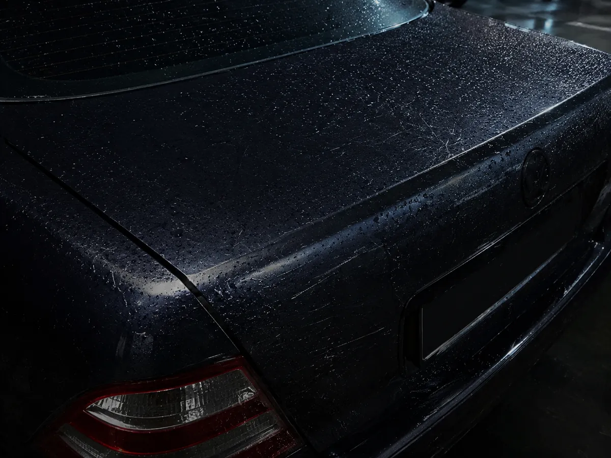
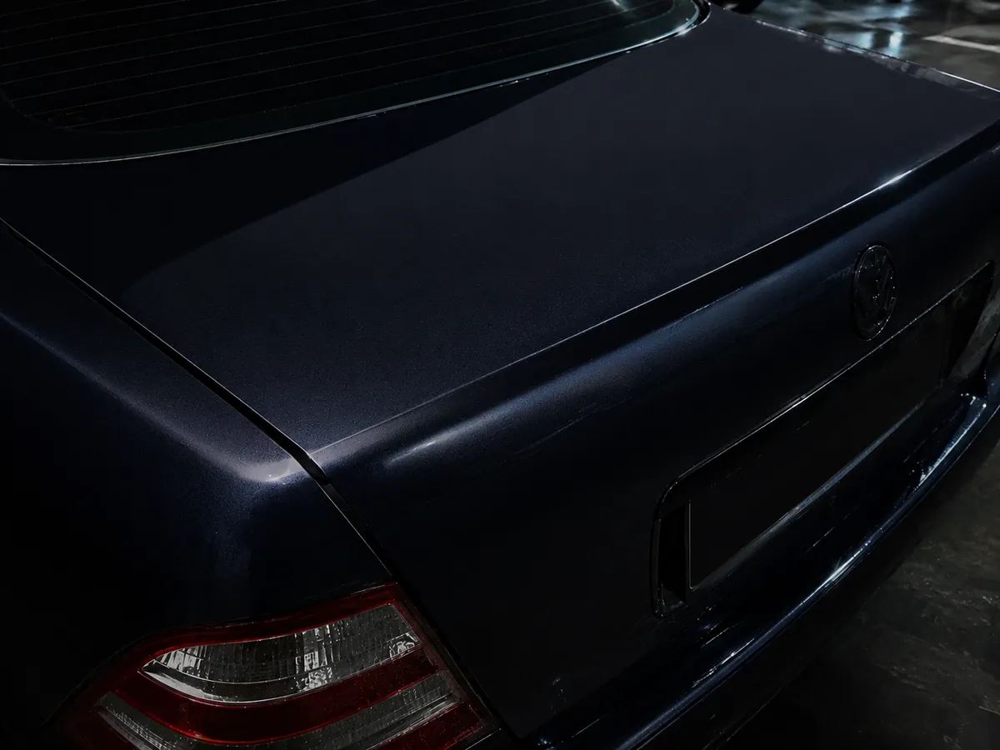
ДоПосле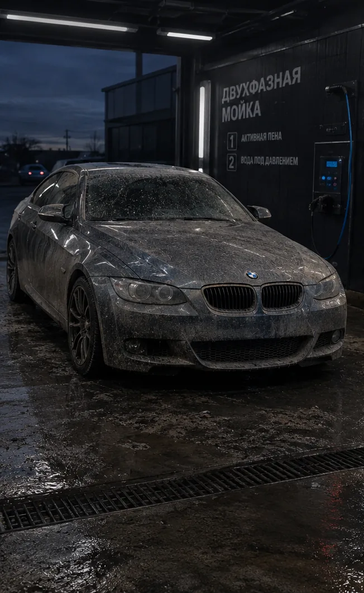
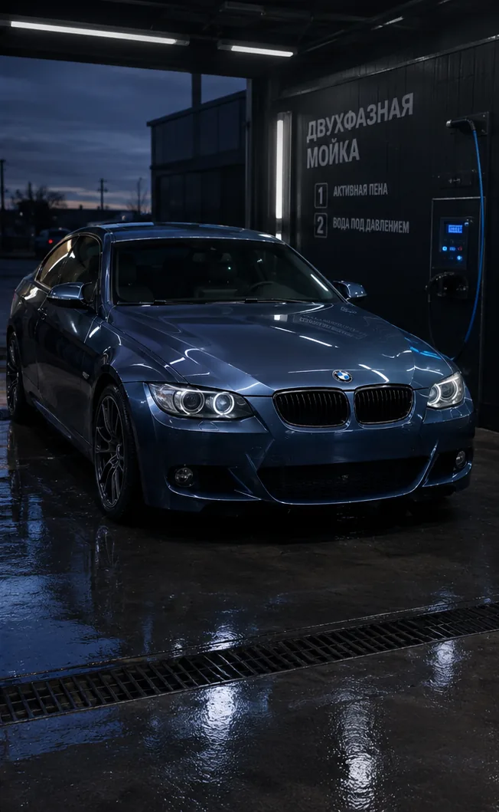
ДоПосле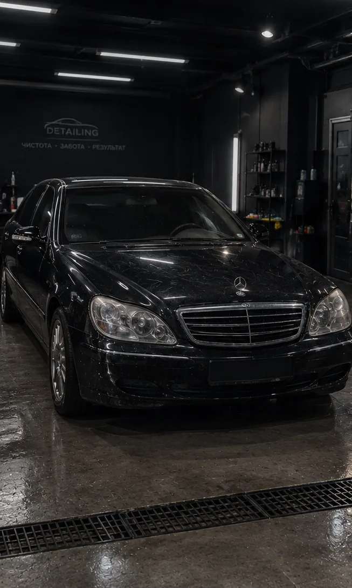
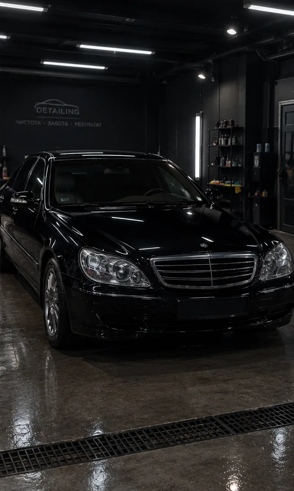
ДоПослеПотяните шторку
Слева капот после двух зим без ухода. Справа тот же капот после полировки в три шага и керамики: голограммы и паутинка ушли, цвет снова глубокий.
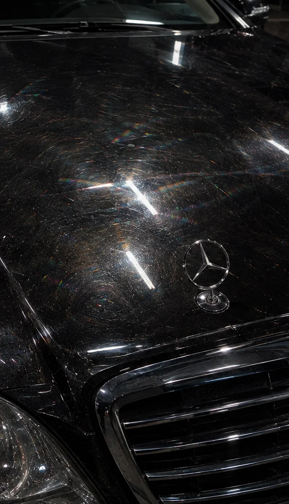
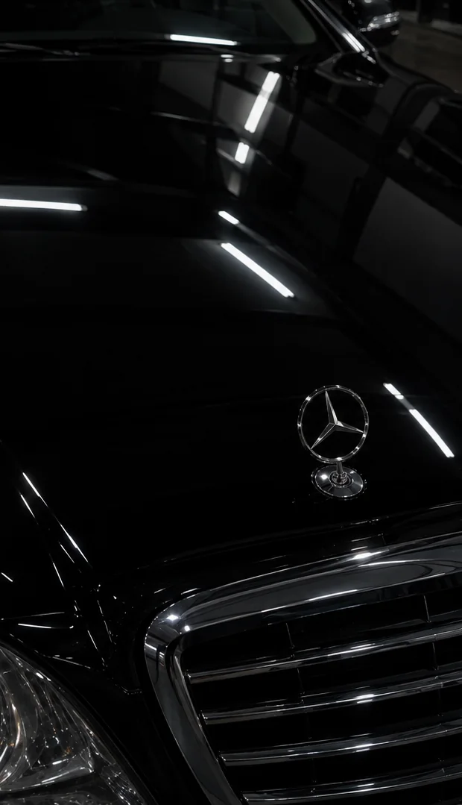
ДоПослеПолейте сами
Водите курсором или пальцем по панелям. Слева обычный лак: вода растекается и сохнет пятнами. Справа керамика 9H: капли собираются в шарики и скатываются, унося грязь.
Если ничего не трогать, капли падают сами.
Соберите уход под себя
Отметьте услуги, и сумма со сроком пересчитаются сразу. Набор переносится в запись одной кнопкой.
Как проходит визит
Мастер присылает фото с каждого этапа в мессенджер, так что вы видите, где сейчас машина.
Приёмка
Осматриваем под лампами, замеряем толщину лака, фотографируем все дефекты.
Мойка
Щелочная и кислотная пена, затем очистка глиной. Щётки и губки не используем.
Коррекция
Полируем по зонам и после каждого шага проверяем глянец прибором.
Защита
Наносим керамику или клеим плёнку, сушим инфракрасными лампами в закрытом боксе.
Выдача
Показываем результат, отдаём паспорт покрытия и памятку по уходу.
Чистая машина каждый месяц
Фиксированная сумма в месяц и приоритетная запись. Мойка по абонементу не снимает защитное покрытие.
Лоск
- 2 двухфазные мойки
- Пылесос и влажная уборка салона
- Чернение шин
- Запись за 24 часа
Сияние
- 4 мойки с обновлением гидрофоба
- Химчистка салона раз в квартал
- Скидка 15% на полировку и керамику
- Запись за 2 часа
Зеркало
- Мойки без ограничений
- Обслуживание керамики раз в полгода
- Забираем и привозим машину
- Персональный мастер
Что говорят гости
1 240 отзывов с 2019 года. Отвечаем на каждый, а если что-то не так, переделываем бесплатно.
Забрал машину вечером и минут десять ходил вокруг. Чёрный снова стал чёрным, без серых разводов.ААртём К.Купе · полировка и керамика
Мастер прислал фото каждой царапины ещё на приёмке. Впервые понимаю, за что плачу.ООльга Н.Кроссовер · химчистка салона
Хожу по абонементу второй год. Записываюсь утром, к обеду машина готова, керамика держится как в первый месяц.ДДмитрий С.Седан · абонемент «Сияние»
Выберите время
Отметьте день и время. Администратор перезвонит в течение 15 минут и подтвердит запись.
Частые вопросы
Сколько держится керамика?
Два слоя 9H держатся до пяти лет, если мыть машину раз в две недели нейтральной химией. На этот срок выдаём паспорт покрытия с гарантией.
Можно оставить машину на ночь?
Да. Машины стоят в закрытых боксах, студию круглосуточно охраняют и снимают камеры. Ключи лежат в сейфе.
Чем ваша мойка отличается от обычной?
Мы касаемся кузова только после того, как пена смоет песок и абразивную грязь. Для верха и низа берём разные варежки, сушим фильтрованным воздухом. Новые царапины так не появляются.
Как оплатить?
Картой, по QR-коду или по счёту для юрлиц. Предоплату берём только за работы дольше одного дня.